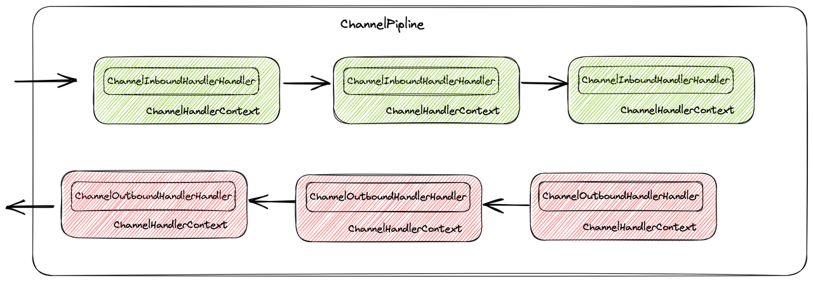
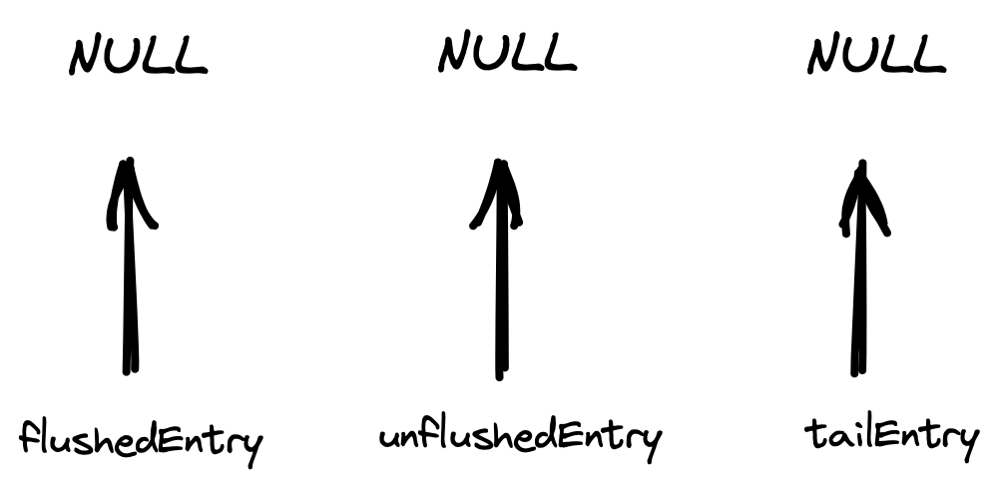
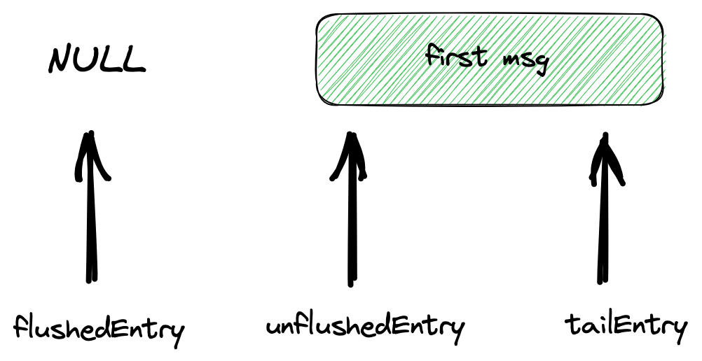
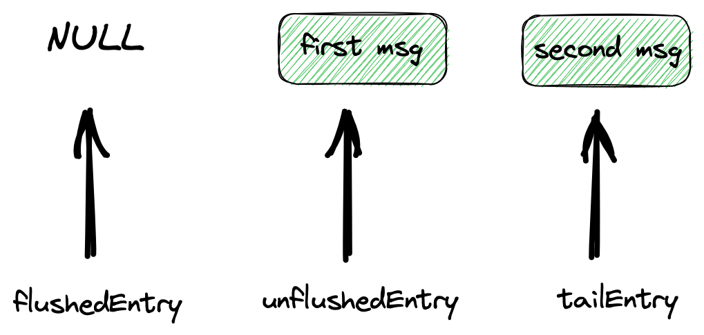
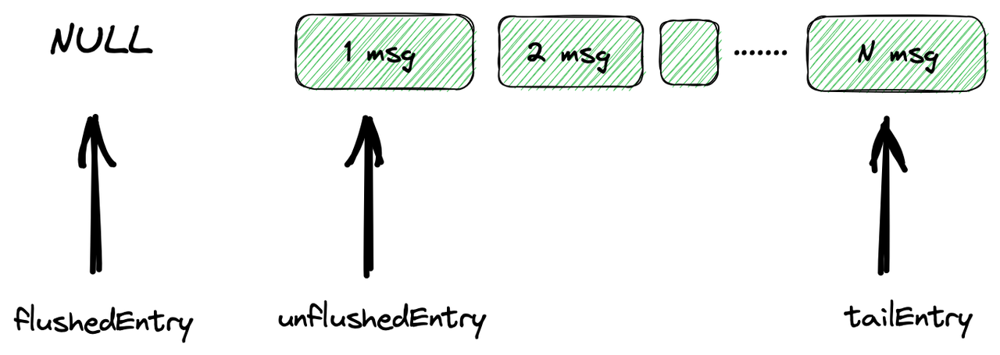
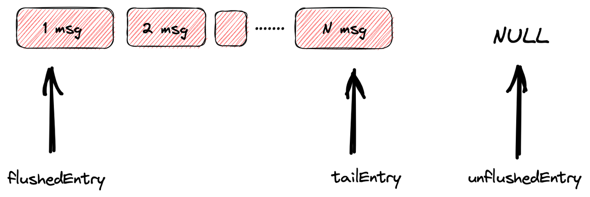

1. ChannelPipline 传播事件
每一个Channel都会分配一个新的ChannelPipline
其中处理每一个事件的主要是ChannelHandler
ChannelHandlerContext代表了ChannelHandler和ChannelPipline之间的关联

channel的入站事件会从第一个HeadContext的channelHandler一直向后传播
通常ChannelPipline中的每一个ChannelHandler都是通过它的EventLoop(I/O线程)来处理传递给它的事件
2. 写事件
netty是一个异步网络I/O框架
connection.getChannel().writeAndFlush(rpcMessage)
.addListener(new FutureListener<Void>() {
public void operationComplete(Future<Void> f) throws Exception {
if (f.isSuccess()) {
log.info("channel write message success");
} else {
log.error("write message error:", f.cause());
}
}
});
写事件会在ChannelOutboundHandler中向前传播
private void write(Object msg, boolean flush, ChannelPromise promise) {
ObjectUtil.checkNotNull(msg, "msg");
......
AbstractChannelHandlerContext next = this.findContextOutbound(flush ? 98304 : '耀');
Object m = this.pipeline.touch(msg, next);
EventExecutor executor = next.executor();
if (executor.inEventLoop()) {
if (flush) {
next.invokeWriteAndFlush(m, promise);
} else {
next.invokeWrite(m, promise);
}
} else {
WriteTask task = AbstractChannelHandlerContext.WriteTask.newInstance(next, m, promise, flush);
if (!safeExecute(executor, task, promise, m, !flush)) {
task.cancel();
}
}
}
通过this.findContextOutbound拿到下一个ChannelHandlerContext
最终会来到HeadContext,调用outboundBuffer来addMessage
public final void write(Object msg, ChannelPromise promise) {
this.assertEventLoop();
ChannelOutboundBuffer outboundBuffer = this.outboundBuffer;
....
int size;
try {
msg = AbstractChannel.this.filterOutboundMessage(msg);
// 估计待写数据大小
size = AbstractChannel.this.pipeline.estimatorHandle().size(msg);
if (size < 0) {
size = 0;
}
} catch (Throwable var15) {
try {
ReferenceCountUtil.release(msg);
} finally {
this.safeSetFailure(promise, var15);
}
return;
}
outboundBuffer.addMessage(msg, size, promise);
}
由于netty是异步网络框架
这里的filterOutboundMessage是为了检查写入类型
protected final Object filterOutboundMessage(Object msg) {
if (msg instanceof ByteBuf) {
ByteBuf buf = (ByteBuf)msg;
return buf.isDirect() ? msg : this.newDirectBuffer(buf);
} else if (msg instanceof FileRegion) {
return msg;
} else {
throw new UnsupportedOperationException("unsupported message type: " + StringUtil.simpleClassName(msg) + EXPECTED_TYPES);
}
}
3. 待缓冲数据队列--ChannelOutboundBuffer
ChannelOutboundBuffer是一个单链表结构的缓冲队列
-
unflushedEntry
： 。 -
tailEntry
： -
flushedEntry
： ， ，
调用addMessage方法之前

当添加第一个msg后

添加第二个msg

以此类推

直到达到了ChannelOutboundBuffer的高水位线
private void incrementPendingOutboundBytes(long size, boolean invokeLater) {
if (size != 0L) {
long newWriteBufferSize = TOTAL_PENDING_SIZE_UPDATER.addAndGet(this, size);
if (newWriteBufferSize > (long)this.channel.config().getWriteBufferHighWaterMark()) {
this.setUnwritable(invokeLater);
}
}
}
4. flush
我们看到
public final void flush() {
this.assertEventLoop();
ChannelOutboundBuffer outboundBuffer = this.outboundBuffer;
if (outboundBuffer != null) {
outboundBuffer.addFlush();
this.flush0();
}
}
addFlush操作会将所有unflushedEntry标记为flushedEntry
public void addFlush() {
Entry entry = this.unflushedEntry;
if (entry != null) {
if (this.flushedEntry == null) {
this.flushedEntry = entry;
}
do {
++this.flushed;
if (!entry.promise.setUncancellable()) {
int pending = entry.cancel();
this.decrementPendingOutboundBytes((long)pending, false, true);
}
entry = entry.next;
} while(entry != null);
this.unflushedEntry = null;
}
}

所有待写入socket的entry会从flushedEntry开始
接下来就是真正的开始write数据到底层的socket了
protected void flush0() {
if (!this.inFlush0) {
ChannelOutboundBuffer outboundBuffer = this.outboundBuffer;
if (outboundBuffer != null && !outboundBuffer.isEmpty()) {
this.inFlush0 = true;
if (AbstractChannel.this.isActive()) {
try {
AbstractChannel.this.doWrite(outboundBuffer);
} catch (Throwable var10) {
this.handleWriteError(var10);
} finally {
this.inFlush0 = false;
}
}
.....
}
}
}
protected void doWrite(ChannelOutboundBuffer in) throws Exception {
java.nio.channels.SocketChannel ch = this.javaChannel();
int writeSpinCount = this.config().getWriteSpinCount();
do {
if (in.isEmpty()) {
this.clearOpWrite();
return;
}
int maxBytesPerGatheringWrite = ((NioSocketChannelConfig)this.config).getMaxBytesPerGatheringWrite();
ByteBuffer[] nioBuffers = in.nioBuffers(1024, (long)maxBytesPerGatheringWrite);
int nioBufferCnt = in.nioBufferCount();
switch (nioBufferCnt) {
case 0:
writeSpinCount -= this.doWrite0(in);
break;
case 1:
ByteBuffer buffer = nioBuffers[0];
int attemptedBytes = buffer.remaining();
int localWrittenBytes = ch.write(buffer);
if (localWrittenBytes <= 0) {
this.incompleteWrite(true);
return;
}
this.adjustMaxBytesPerGatheringWrite(attemptedBytes, localWrittenBytes, maxBytesPerGatheringWrite);
in.removeBytes((long)localWrittenBytes);
--writeSpinCount;
break;
default:
long attemptedBytes = in.nioBufferSize();
long localWrittenBytes = ch.write(nioBuffers, 0, nioBufferCnt);
if (localWrittenBytes <= 0L) {
this.incompleteWrite(true);
return;
}
this.adjustMaxBytesPerGatheringWrite((int)attemptedBytes, (int)localWrittenBytes, maxBytesPerGatheringWrite);
in.removeBytes(localWrittenBytes);
--writeSpinCount;
}
} while(writeSpinCount > 0);
this.incompleteWrite(writeSpinCount < 0);
写一直发生在这个do while里面
这里注意两点
- maxBytesPerGatheringWrite
每次写入数据的大小
private void adjustMaxBytesPerGatheringWrite(int attempted, int written, int oldMaxBytesPerGatheringWrite) {
if (attempted == written) {
if (attempted << 1 > oldMaxBytesPerGatheringWrite) {
((NioSocketChannelConfig)this.config).setMaxBytesPerGatheringWrite(attempted << 1);
}
} else if (attempted > 4096 && written < attempted >>> 1) {
((NioSocketChannelConfig)this.config).setMaxBytesPerGatheringWrite(attempted >>> 1);
}
}
如果这次尝试写入量attempted与真实写入量written一样
- writeSpinCount
默认一次写入最多循环16次
protected final void incompleteWrite(boolean setOpWrite) {
if (setOpWrite) {
this.setOpWrite();
} else {
this.clearOpWrite();
this.eventLoop().execute(this.flushTask);
}
}
channel的写事件会向前传播